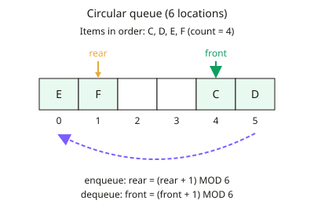

A-level Computer Science Year 12 · Topic 5
Further data structures
Further data structures gives you more powerful ways to organise data for different problems.
We will use circular and priority queues, multi-dimensional arrays, records, tuples, dictionaries and vectors.
Then we build linked lists, binary search trees, graphs and hash tables, and compare their strengths.
- 6 subtopics
- 191 questions
- Free: 5.1 notes and 10 questions
In this topic
- 5.1Queue variants and multi-dimensional arrays: circular queues, priority queues, 2D and 3D arraysFree below · 25 questions
- 5.2Records, tuples, vectors, dictionaries and user-defined data typesOpen in Full Marks · 26 questions
- 5.3Linked listsOpen in Full Marks · 28 questions
- 5.4Trees and binary search treesOpen in Full Marks · 68 questions
- 5.5Graphs: adjacency matrices and adjacency listsOpen in Full Marks · 22 questions
- 5.6Hash tables and hashingOpen in Full Marks · 22 questions
5.1 · Free notes
Queue variants and multi-dimensional arrays: circular queues, priority queues, 2D and 3D arrays

Key points
- A queue is a FIFO (first in, first out) structure. In a simple linear queue held in a fixed-size array, the front moves along as items are removed, so the locations before it are wasted.
- A circular queue reuses freed locations by letting the front and rear pointers wrap round to the start of the array. This makes better use of a fixed-size (static) array.
- Wrap-round uses MOD: rear = (rear + 1) MOD maxSize on enqueue, and front = (front + 1) MOD maxSize on dequeue. The rear pointer can therefore be numerically smaller than the front pointer.
- Track the number of items with a count (size) variable, or leave one location unused. The queue is full when count = maxSize and empty when count = 0.
- Before enqueueing, check the queue is not full; otherwise report overflow. Before dequeueing, check it is not empty; otherwise report underflow.
- A priority queue gives every item a priority. The item with the highest priority is removed first, and items of equal priority are normally served in arrival order (FIFO).
- A priority queue can be a list kept in priority order, or a separate queue for each priority level. Keeping order means insertion must search for the correct position (O(n)), while removing the front item is O(1).
- Typical uses of priority queues: process scheduling, hospital triage, print job spooling and shortest-path algorithms such as Dijkstra's and A*.
- A 2D array is a table of elements of the same data type, accessed with two indices, array[row][column]. Use it for game boards, grids, matrices and images.
- A 3D array uses three indices, e.g. temp[day][hour][sensor]. The total number of elements is the product of the dimensions (7 × 24 × 3 = 504). Check whether indexing starts at 0 or 1.
- Traverse a 2D array with nested loops: the outer loop usually runs over rows and the inner loop over columns. A 3D array needs three nested loops.
In more detail
- Worked circular queue: capacity 5 with rear at index 4 → the next item goes to (4 + 1) MOD 5 = 0, reusing space freed at the front.
- Worked linear queue waste: after 5 enqueues and 3 dequeues in a 5-slot linear queue, slots 0–2 are wasted unless items are shuffled forward.
- Worked priority queue: jobs A (priority 2), B (priority 5), C (priority 2) leave in the order B, A, C; equal priorities stay first in, first out.
- Worked 3D array: temperatures[day][hour][sensor] for 7 days × 24 hours × 3 sensors holds 504 values.
- Worked full and empty checks: keep a size counter: the queue is empty when size = 0 and full when size = capacity.
Practice
Queue variants and multi-dimensional arrays: circular queues, priority queues, 2D and 3D arrays: 10 questions
Pick an answer to check it, or open the answer for the explanation.
1. A circular queue has 8 locations (0-7). The rear pointer is 7 and an item is added. Which expression gives the new rear?
- rear - 1, giving 6
- rear + 1, giving 8
- (rear + 1) MOD 8, giving 0
- (rear + 1) DIV 8, giving 1
Show answer
C: (rear + 1) MOD 8, giving 0. MOD wraps the pointer: (7 + 1) MOD 8 = 0, so the item goes in location 0 (provided the queue is not full). Plain rear + 1 would go past the end of the array.
2. What is the main advantage of a circular queue over a simple linear queue held in a fixed-size array?
- Freed locations at the front can be reused
- The queue can never become full
- Items can be removed from either end
- Items are automatically sorted by priority
Show answer
A: Freed locations at the front can be reused. Wrapping the pointers round lets locations vacated by dequeues be reused, so space is not wasted. The queue still has a fixed maximum size and is still FIFO.
3. A circular queue uses locations 0-4. Front pointer = 3 and rear pointer = 1 (rear points to the last item). How many items are stored?
- 3
- 4
- 5
- 2
Show answer
B: 4. Items occupy locations 3, 4, 0 and 1, which is 4 items. Calculation: (1 - 3) MOD 5 + 1 = 3 + 1 = 4.
4. A priority queue (1 = highest priority; ties served first come first served) receives A(2), B(1), C(2), D(3) in that order. What is the dequeue order?
- B, A, C, D
- B, C, A, D
- A, B, C, D
- D, A, C, B
Show answer
A: B, A, C, D. B has the highest priority (1) so leaves first. A and C share priority 2, and A arrived first. D has the lowest priority so leaves last.
5. Which situation is the best use of a priority queue?
- Undoing the last action in a word processor
- Reversing the characters in a string
- Storing the positions of pieces on a chessboard
- Hospital patients being seen in order of urgency
Show answer
D: Hospital patients being seen in order of urgency. Items are served according to importance, not just arrival time, which is a priority queue. Undo and reversing use a stack; a chessboard uses a 2D array.
6. A 3D array holds readings for 3 floors × 4 rooms × 5 sensors. How many elements does it contain?
- 47
- 60
- 20
- 12
Show answer
B: 60. The number of elements is the product of the dimensions: 3 × 4 × 5 = 60. Adding the dimensions (12) is a common error.
7. board = [[1,2,3],[4,5,6],[7,8,9]] is a 2D array with zero-based indices, row first. What is board[2][1]?
- 4
- 2
- 8
- 6
Show answer
C: 8. board[2] is the third row [7,8,9]; index 1 of that row is 8. board[1][2] would be 6.
8. Using board = [[1,2,3],[4,5,6],[7,8,9]], a loop adds board[r][2] for r from 0 to 2. What total results?
- 12
- 15
- 6
- 18
Show answer
D: 18. The loop adds the last column: 3 + 6 + 9 = 18. Row 1 would give 15, column 0 gives 12 and row 0 gives 6.
9. Which statement about a circular queue implemented in an array is correct?
- Dequeuing shifts every remaining item one place left
- The front pointer always has a smaller value than the rear
- The rear pointer can have a smaller value than the front
- A stack is used to make the pointers wrap round
Show answer
C: The rear pointer can have a smaller value than the front. Once the rear wraps past the end of the array it is numerically below the front, e.g. front = 4, rear = 1. No shifting is needed, which is why it is efficient.
10. A circular queue has maximum size 6 and its count variable is 6. A program tries to enqueue another item. What should happen?
- The item is stored in location 6
- The front pointer is reset to 0 and the item added
- The oldest item is silently overwritten
- A queue full (overflow) error is reported
Show answer
D: A queue full (overflow) error is reported. count = maxSize means the queue is full. Adding an item would overwrite unread data, so the program must check for this and report overflow.
Keep going in Full Marks
Full Marks has 25 questions on Queue variants and multi-dimensional arrays: circular queues, priority queues, 2D and 3D arrays (15 more than here), set out in practice levels. You also get notes and 3D models for all 6 subtopics of Further data structures, plus games, timed exams and past papers.